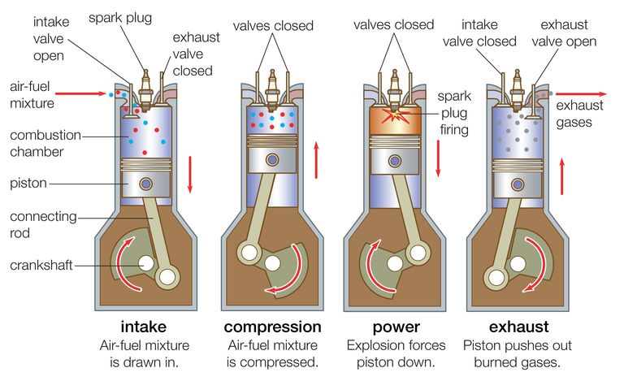

How Car Engine Works
 |
|---|
| Fig.1 - Car Engine |
Most cars on the road today use a four-stroke internal combustion engine. an internal-combustion engine is a heat engine in that it converts energy from the heat of burning petrol/disel into mechanical work, or torque. That torque is applied to the wheels to make the car move.
Engines have pistons that move up and down inside metal tubes called cylinders. Pistons are connected via rods to a crankshaft, and they move up and down to spin the engine's crankshaft. Depending on the vehicle, there are typically between two and 12 cylinders in its engine, with a piston moving up and down in each.
 |
|---|
| Fig.2 - Car Engine Working |
What powers those pistons up and down are thousands of tiny controlled explosions occurring each minute, created by mixing fuel with oxygen and igniting the mixture. Each time the fuel ignites is called the combustion, or power, stroke. The heat and expanding gases from this mini explosion push the piston down in the cylinder.
Almost all of today's internal-combustion engines (to keep it simple, we'll focus on gasoline powerplants here) are of the four-stroke variety. Beyond the combustion stroke, which pushes the piston down from the top of the cylinder, there are three other strokes: intake, compression, and exhaust.
Engines need air (namely oxygen) to burn fuel. During the intake stroke, valves open to allow the piston to act like a syringe as it moves downward, drawing in ambient air through the engine's intake system. When the piston reaches the bottom of its stroke, the intake valves close, effectively sealing the cylinder for the compression stroke, which is in the opposite direction as the intake stroke. The upward movement of the piston compresses the intake charge.
In today's most modern engines, gasoline is injected directly into the cylinders near the top of the compression stroke. (Other engines premix the air and fuel during the intake stroke.) In either case, just before the piston reaches the top of its travel, known as top dead center, spark plugs ignite the air and fuel mixture.
The resulting expansion of hot, burning gases pushes the piston in the opposite direction (down) during the combustion stroke. This is the stroke that gets the wheels on your car rolling, just like when you push down on the pedals of a bike. When the combustion stroke reaches bottom dead center, exhaust valves open to allow the combustion gases to get pumped out of the engine (like a syringe expelling air) as the piston comes up again. When the exhaust is expelled—it continues through the car's exhaust system before exiting the back of the vehicle—the exhaust valves closes at top dead center, and the whole process starts over again.
|  |
|---|
| Fig.3 - Four Strokes of a Engine |
This animated video explains nicely basic working of four stroke engine.
How Transmission Works
As we have seen earlier engine of your vehicle creates rotational power which comprises of RPM, Torque and Power. Engine RPM and associated Torque and Power can varried within range (say 1000 RPM to 6000 RPM) can be varried through controlling fuel-air mixture by pressing accelerator pedal.To move the car, we need to transfer that rotational power to the wheels. Let us look at the image below to give us an idea Torque and Power it delivers at various rpm within its operating range for an Santro-Xing.
| Fig.4 - Horsepower and torque curve |
However the car will require various combinations of torque and speed in different circumstances like starting from stationary position, climbing an uphill, towing another car (more torque less speed) and coasting in plain road (less torque and more speed). Transmission (Gearbox) converts engine rpm and torque to different rpm and torque to be used by car.So in order to ensure vehicle wheels gets optimum power (combination of torque and speed) while engine spins at optimal rate, we employ Transmission which also refers as Gearbox.Transmission of power takes through a series of different size gears so that output rpm is controlled.
The transmission ensures that your engine spins at an optimal rate (neither too slow or too fast) while simultaneously providing your wheels with the right amount of power they need to move and stop the car, no matter the situation you find yourself in.
It’s able to do this effective transmitting of power through a series of different sized gears that leverage the power of gear ratio.
Inside the transmission are a series of variously sized, toothed gears that produce torque. Because the gears that interact with each other are different sizes, torque can be increased or decreased without changing the speed of the engine’s rotational power all that much. This is thanks to gear ratios.
Gear ratios represent the gears’ relation to each other in size. When different sized gears mesh together, they can spin at different speeds and deliver different amounts of power.
Below you’ll find a diagram of the power flow when the different gears in a 5-speed manual transmission vehicle are engaged.
| Fig.5 5 Speed Transmission |
First Gear. It’s the largest gear in the transmission and enmeshed with a small gear. A typical gear ratio when a car is in first gear is 3.166:1. When first gear is engaged, low speed, but high power is delivered. This gear ratio is great for starting your car from a standstill.
Second Gear. The second gear is slightly smaller than first gear, but still is enmeshed with a smaller gear. A typical gear ratio is 1.882:1. Speed is increased and power decreased slightly.
Third Gear. Third gear is slightly smaller than the second, but still enmeshed with a smaller gear. A typical gear ratio is 1.296:1.
Fourth Gear. Fourth gear is slightly smaller than the third. In many vehicles, by the time a car is in fourth gear, the output shaft is moving at the same speed as the input shaft. This arrangement is called “direct drive.” A typical gear ratio is 0.972:1
Fifth Gear. In vehicles with a fifth gear (also called “overdrive”), it is connected to a gear that’s significantly larger. This allows the fifth gear to spin much faster than the gear that’s delivering power. A typical gear ratio is 0.78:1.
Parts of a Manual Transmission
Input shaft. The input shaft comes from the engine. This spins at the same speed and power of the engine.
Countershaft. The countershaft (aka layshaft) sits just below the output shafts. The countershaft connects directly to the input shaft via a fixed speed gear. Whenever the input shaft spins, so does the countershaft, and at the same speed as the input shaft.
In addition to the gear that takes power from the input shaft, the countershaft also has several gears on it, one for each of the car’s “gears” (1st-5th), including reverse.
Output shaft. The output shaft runs parallel above the countershaft. This is the shaft that delivers power to the rest of the drivetrain. The amount of power the output shaft delivers all depends on which gears are engaged on it. The output shaft has freely rotating gears that are mounted on it by ball bearings. The speed of the output shaft is determined by which of the five gears are in “gear,” or engaged.
1st-5th gears. These are the gears that are mounted on the output shaft by bearings and determine which “gear” your car is in. Each of these gears is constantly enmeshed with one of the gears on the countershaft and are constantly spinning. This constantly enmeshed arrangement is what you see in synchronized transmissions or constant mesh transmissions, which most modern vehicles use. (We’ll go into how all the gears can always be spinning while only one of them is actually delivering power to the drivetrain here in a bit.)
Idler gear. The idler gear (sometimes called “reverse idler gear”) sits between the reverse gear on the output shaft and a gear on the countershaft. The idler gear is what allows your car to go in reverse. The reverse gear is the only gear in a synchronized transmission that isn’t always enmeshed or spinning with a countershaft gear. It only moves whenever you actually shift the vehicle into reverse.
Synchronizer collars/sleeves. Most modern vehicles have a synchronized transmission, meaning the gears that deliver power on the output shaft are constantly enmeshed with gears on the countershaft and are constantly spinning. But you might be thinking, “How can all five gears be constantly enmeshed and constantly spinning, but only one of those gears is actually delivering power to the output shaft?”
The other issue that comes up with the gears always spinning is that the drive gear is often rotating at a different speed than the output shaft that the gear is connected to. How do you sync up a gear spinning at a different rate as the output shaft, and in a smooth way that doesn’t cause a lot of grinding?
The answer to both questions: synchronizer collars.
As mentioned above, gears 1-5 are mounted on the output shaft via ball bearings. This allows all of the gears to freely spin at the same time while the engine is running. To engage one of these gears, we need to firmly connect it to the output shaft, so power is delivered to the output shaft and then to the rest of the drivetrain.
Between each of the gears are rings called synchronizer collars. On a five-speed transmission, there’s a collar between the 1st and 2nd gears, between the 3rd and 4th gears, and between the 5th and reverse gear.
Whenever you shift a car into a gear, the synchronizer collar shifts over to the moving gear you’re looking to engage. On the outside of the gear are a series of cone-shaped teeth. The synchronizer collar has grooves to accept those teeth. Thanks to some excellent mechanical engineering, the synchronizer collar can connect to a gear with very little noise or friction even while the gear is moving, and sync the gear’s speed with the input shaft. Once the synchronizer collar is enmeshed with the driving gear, that driving gear is delivering power to the output shaft. Whenever a car is “neutral” none of the synchronizer collars are enmeshed with a driving gear.
Synchronizer collars are also something that’s easier to understand visually. Heres a short video trying to explain synchronizer.
Gearshift. The gearshift is what you move to put a car into gear.
Shift rod. The shift rods are what move the synchronizer collars towards the gear you want to engage. On most five-speed vehicles, there are three shift rods. One end of a shift rod is connected to the gearshift. At the other end of the shift rod is a shift fork that holds the synchronizer collar.
Shift fork. The shift fork holds the synchronizer collar.
Clutch. The clutch sits between the engine and gearbox of the transmission. When the clutch is disengaged, it disconnects power flow between the engine and transmission gearbox. This disconnection of power allows the engine to continue running even though the rest of the car’s drivetrain isn’t getting any power. With engine power disconnected from the transmission, shifting gears is much easier and prevents damage to the transmission gears. This is why whenever you shift gears, you push the clutch pedal and disengage the clutch.
When the clutch is engaged — your foot comes off the pedal — power between the engine and transmission is restored.
Let us have a closer look at the Clutch.
So let’s bring this all together and walk through what happens whenever you shift gears in a vehicle. We’ll begin with starting a car and shifting up to second gear.
When you start a manual transmission car, before you turn the key, you disengage the clutch by pressing down on the clutch pedal. This disconnects power flow between the engine’s input shaft and transmission. This allows your engine to run without delivering power to the rest of the vehicle.
With the clutch disengaged, you move the gearshift into first gear. This causes a shifting rod in your transmission’s gearbox to move the shifting fork towards first gear, which is mounted to the output shaft via ball bearings.
This first gear on the output shaft is enmeshed with a gear that’s connected to a countershaft. The countershaft connects to the engine’s input shaft via a gear and spins at the same speed as the engine’s input shaft.
Attached to the shifting fork is a synchronizer collar. The synchronizer collar does two things:
It firmly mounts the driving gear to the output shaft so the gear can deliver power to the output shaft and It ensures that the gear syncs up with the speed of the output shaft.
Once the synchronizer collar is enmeshed with the first gear, the gear is firmly connected to the output shaft, and the vehicle is now in gear.
To get the car moving, you press down slightly on the gas (which creates more engine power) and slowly take your foot off the clutch (which engages the clutch and reconnects power between the engine and transmission gearbox).
Because the first gear is large, it causes the output shaft to spin more slowly than the engine’s input shaft, but deliver more power to the rest of the drivetrain. This is thanks to the wonders of gear ratios.
If you’ve done everything correctly, the car will slowly begin to move forward.
Once you’ve got the car going, you’ll want to go faster. But with the car in first gear, you’re not going to be able to go very fast because the gear ratio causes the output shaft to turn at a certain speed. If you were to floor the gas pedal with the car in first gear, you’re just going to cause the engine’s input shaft to spin really fast (and possibly damage the motor in the process), but not see an increase in vehicle speed.
To increase the speed of the output shaft, we need to shift up to second gear. So we step on the clutch to disconnect power between the engine and transmission gearbox and shift into second gear. This moves the shifting rod that has a shift fork and synchronizer collar towards second gear. The synchronizer collar syncs up the second gear’s speed with the output shaft and firmly mounts it to the output shaft. The output shaft can now spin faster without the engine’s input shaft spinning furiously to produce the power the car needs.
For the rest of the five gears, it’s rinse, wash, and repeat.
Reverse gear is the exception. Unlike the other driving gears where you can shift up without completely stopping the car, to shift in reverse, you need to be at a standstill. This is because the reverse gear isn’t constantly enmeshed with a gear on the counter shaft. To slide the reverse gear into its corresponding countershaft gear, you need to make sure the countershaft is not moving. To ensure the countershaft isn’t spinning, you need to have the car completely stopped.
Sure, you can force a forward moving car into reverse gear, but it’s not going to sound or feel pretty, and you may cause a lot of damage to the transmission.
Entire process of transmission from your engine to wheel is explained here.
Differntial
Simply put, a differential is a system that transmits an engine's torque to the wheels. The differential takes the power from the engine and splits it, allowing the wheels to spin at different speeds. ... Turn it around a corner and you'll have no issues, as each wheel is able to turn independently from the other. With front-wheel-drive (FWD), the differential is alongside the transmission inside a housing, and the unit is called a transaxle. With rear-wheel-drive (RWD), the differential is between the rear wheels, connected to the transmission by a driveshaft. All-wheel-drive (AWD) and four-wheel-drive (4WD) vehicles add a centre differential or transfer case to distribute power front and rear.
The differential has three jobs:
To aim the engine power at the wheels
To act as the final gear reduction in the vehicle, slowing the rotational speed of the transmission one final time before it hits the wheels
To transmit the power to the wheels while allowing them to rotate at different speeds (This is the one that earned the differential its name.
Brakes
Cars have brakes on all four wheels that are operated by a hydraulic system. The brakes are either a disc type or drum type. Many cars have four-wheel disc brakes – although some have discs for the front wheels and drums for the rear. Since the lion’s share of stopping a car’s forward momentum relies on the the front brakes, the more effective disc brakes are deployed on the front wheels; less expensive drum set-up provides adequate, but more cost effective, assistance in halting a car’s motion. The car brake system works in a few ways:
Your foot pushes on the brake pedal and the force generated by your leg is amplified several times by mechanical leverage. It is then amplified further by the action of the brake booster. A piston moves into the cylinder AND it squeezes hydraulic fluid out of the end. Hydraulic brake fluid is forced around the entire braking system within a network of brake lines and hoses. Pressure is transmitted equally to all four brakes. The force creates friction between brake pads and disc brake rotors which is what stops your vehicle.